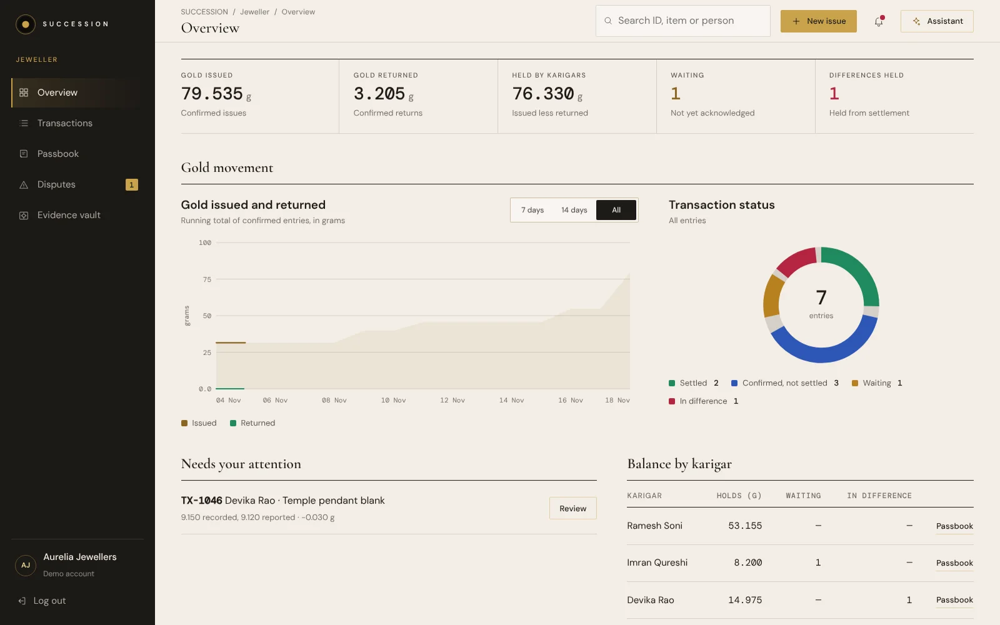
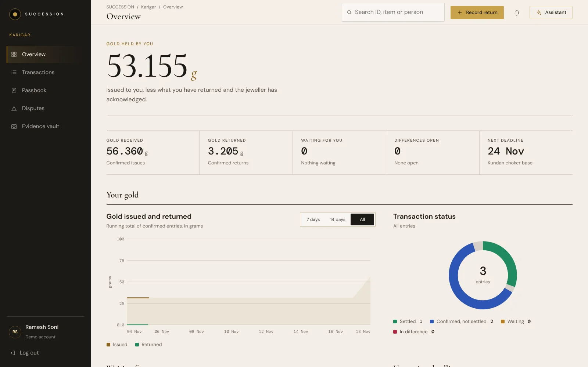
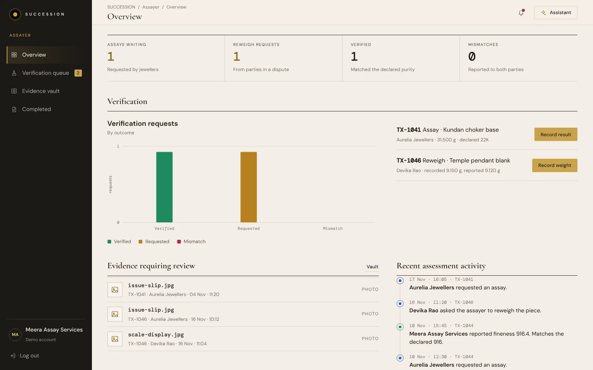

For jewellers, karigars and assayers
Every Transaction. Every Gram. Accounted For.
Bringing transparency, accountability and digital traceability to every gold transaction.
Already have an account? Login
About SUCCESSION
One shared account of every gram.
SUCCESSION is a record-keeping platform for the gold trade. Jewellers, karigars and assayers work from the same time-stamped entry, so agreement no longer depends on memory or paper slips.
Jeweller
Issues gold, records weight and purity, reviews what has been acknowledged, and settles the account.
Karigar
Receives gold, confirms the weight on their own scale, raises a difference when there is one, and records what is returned.
Assayer
Tests purity when asked, and attaches the result to the entry it belongs to.
The problem
Trust has been resting on memorya shared record.
Weights are agreed at the counter.
A figure spoken across a table is remembered differently by each side.
Slips go missing, or change.
Paper and phone notes can be lost, rewritten, or never made at all.
A dispute has nothing to stand on.
Without evidence taken at the moment of handover, every disagreement is one person's word against another's.
Settlement means reconstruction.
Closing an account turns into piecing together who gave and received what, and when.
The SUCCESSION record
One record. Three parties.Every gram traced.
- Transparency
- Jeweller, karigar and assayer see the same entry, in the same terms, at the same moment.
- Accountability
- Every action carries a name, a role and a time. Nothing changes without leaving a trace.
- Traceability
- Follow a quantity of gold from issue, through work and return, to settlement.
- Verification
- Purity is tested by the assayer and the result is attached to the entry it belongs to.
How it works
From the first weighment to the final settlement.
Issue
JewellerRecords weight, purity, the item and the karigar it goes to. Photos or a slip can be attached.
Acknowledge
KarigarWeighs on their own scale and confirms. If the readings differ, the difference is shown to both.
Work & return
Karigar → JewellerFinished pieces and leftover metal are recorded as a return, weighed and acknowledged by the jeweller.
Verify
AssayerTests purity on request. The result is attached to the entry; a mismatch is flagged to both parties.
Settle
Jeweller & KarigarThe passbook balances. Open differences are resolved, with evidence, before the account closes.
Features
Built for the three people at the counter.
See every karigar's balance, what is waiting to be acknowledged, and what is in dispute — in one view. Request an assay from any entry, and resolve a difference with the evidence in front of you.

Confirm what you received on your own scale, raise a difference with a photograph, and record what you hand back. Your passbook shows exactly what you hold.

A queue of entries waiting for purity testing. Record the measured result against the declared purity; a mismatch is flagged to both parties, and the result stays with the entry.

Transaction transparency
Both sides weigh.Both sides see.
The karigar's reading is compared with the jeweller's issue weight the moment it is recorded. A difference inside tolerance is acknowledged. A difference outside it is flagged to both parties and cannot be quietly absorbed.
Illustrative dispute · TX-1046
- 16 Nov · 10:12
Aurelia Jewellers issued 9.150 g of 22K gold to Devika Rao.
issue-slip.jpg - 16 Nov · 11:03
Devika Rao recorded 9.120 g on her scale. Variance −0.030 g is outside tolerance and is flagged to both parties.
- 16 Nov · 11:05
Devika Rao raised a dispute: “Display photographed after tare.”
scale-display.jpg - 17 Nov · 09:30
Aurelia Jewellers reweighed with the karigar present. 9.120 g confirmed.
- 17 Nov · 09:34
Resolved. Received weight accepted. Balance adjusted by −0.030 g.
Evidence & disputes
When numbers differ, the record answers.
A dispute is not a phone call. It is a timeline, opened at the moment the difference appears, with the evidence attached where everyone can see it.
- Photographs
- of the scale display, taken at handover.
- Slips and bills
- scanned and attached to the entry.
- Voice notes
- kept alongside the written entry.
- Assay results
- stored with the purity they confirm.
- Every change
- with who made it and when.
AI-assisted workflows
AI drafts.People confirm.
Entries can be spoken, scanned or searched instead of typed. What the system reads is shown back as a draft. Nothing is saved until a person confirms it.
- Karigar
- Ramesh Soni
- Weight
- 24.860 g
- Purity
- 22K · 91.6%
- Item
- Kundan choker, base
- Date
- 16 Nov 2026
- Party
- Devika Rao
- Weight
- 9.1?0 g Low confidence — please check
- Purity
- 22K
Ramesh Soni holds 53.155 g as of 18 Nov: 24.860 g and 31.500 g issued, less 3.205 g returned.
Trust & Security
Access follows the role.History follows the record.
- Role-based access
- Jewellers, karigars and assayers each see and do only what their role allows.
- A history that is added to, not edited away
- A correction is a new event beside the old one, with a name and a time.
- Evidence stays with the entry
- Photographs, slips and certificates are attached to the transaction they support.
- Works where the connection doesn't
- Entries made offline are kept on the device and synchronised when the connection returns.
- Every action has a person
- Sign-in ties each weighment, acknowledgement and result to the person who made it.
Start withan honest record.
Create an account, or open a demo dashboard and follow an entry from issue to settlement.